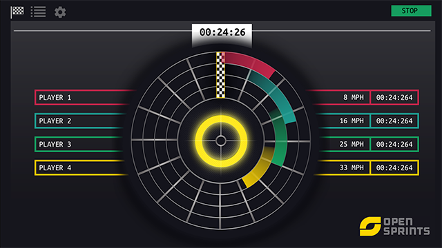
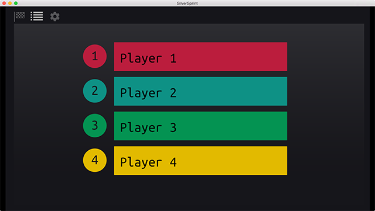

Using Silversprint
Silversprint has 3 main screens.
Race
The race screen is where the competition will take place. The START button will begin the race, and the race will automatically end and display a winner screen when the last competitor crosses the finish line. If the race needs to be stopped for any reason, the START button turns into a STOP button once the race has begun. STOP will reset the entire race immediately.
Roster
The roster screen lets you rename your riders. The number of riders that show up here are based on how many you've picked in the settings.
Settings
The settings screen is where you can change basic information about how the app will run. The following things are configurable.
- Roller Diameter (mm) - To calculate the roller diameter, measure from the magnet to the center of the roller or wheel to get the radius. The diameter is the radius doubled.
- Race Length (meters) - How far away the finish line is
- Number of racers - The number of brave competitors. This updates both the Roster screen and the Race screen.
- Hardware Connection Status - If Silversprint finds a connected arduino, it will be a checkmark, if not, it will show an X. In order to run a race, this MUST be displaying a check.